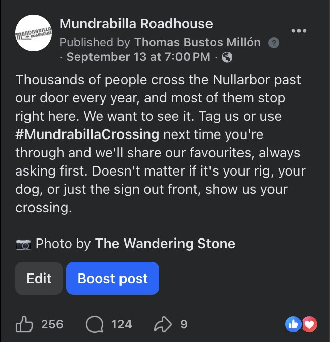
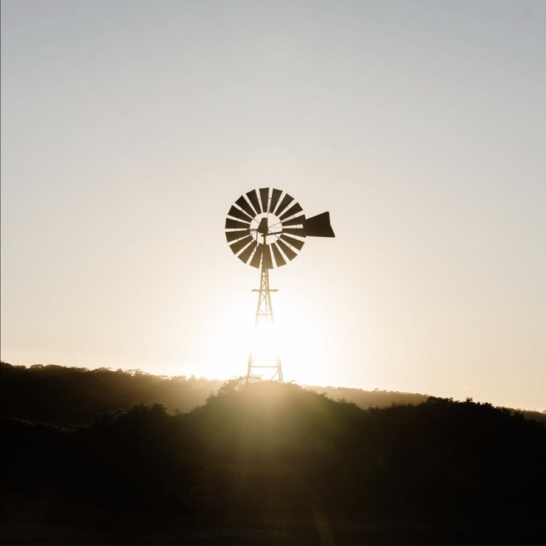
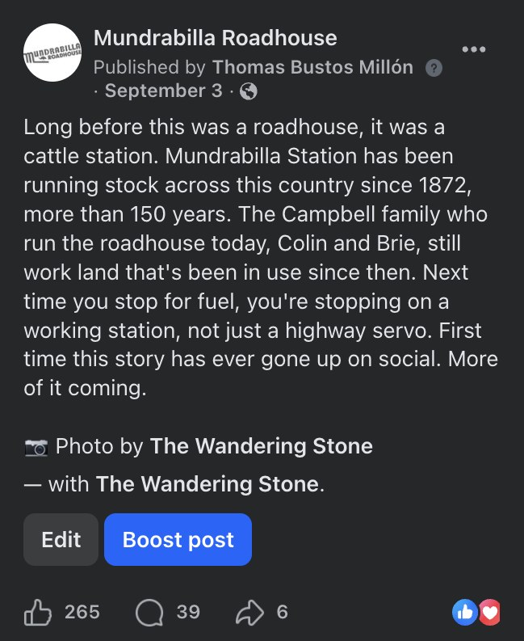
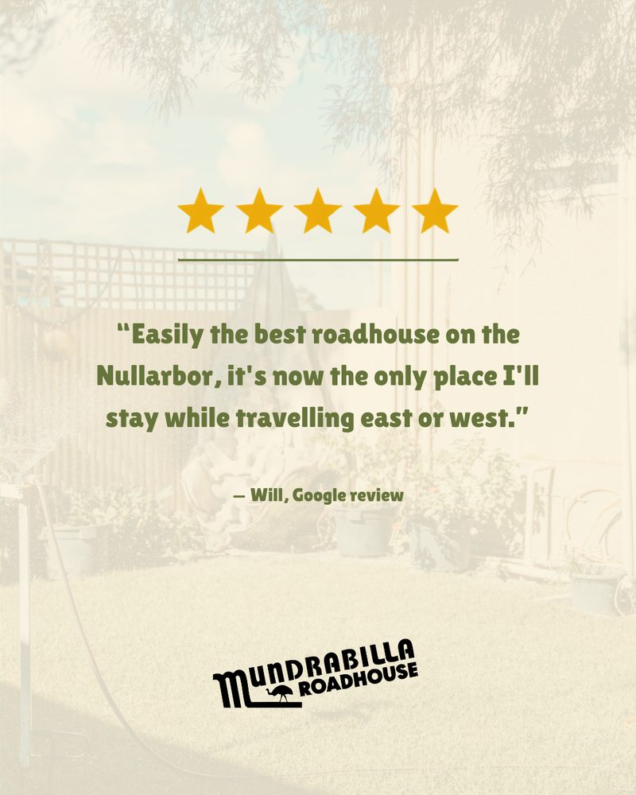
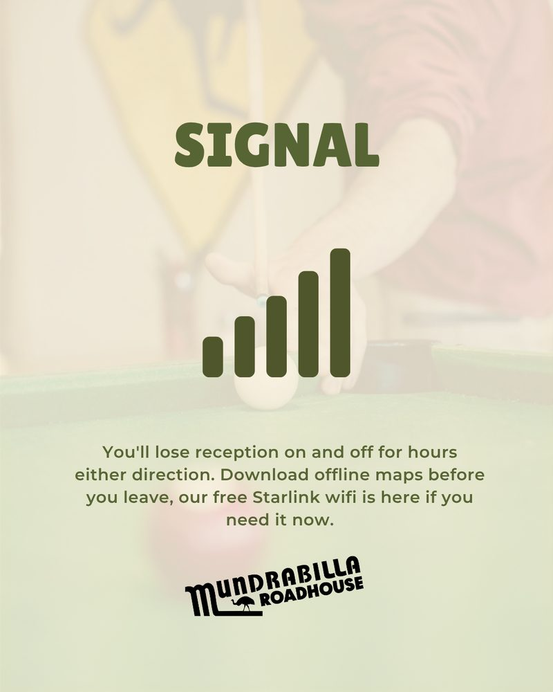

Mundrabilla Roadhouse had posted almost nothing for five months. I restarted its Facebook and Instagram on 30 August 2026, then compared the posts against each other to see what worked.
Mundrabilla has no local customers. Everyone who stops is crossing the Nullarbor, and most plan their stops before they leave. The roadhouse's social pages had been quiet since late February, with comments left unanswered.
Posting again after a long silence lifts the numbers whatever you post. The harder question was which content travellers respond to. I did not want to mistake the bump from posting again for proof that a strategy worked.
I built the content around three things only this roadhouse can talk about: the crossing itself, the station's history since 1872, and practical tips for the drive.
I cleared the backlog of unanswered comments. Then I judged each post against the others published in the same three weeks, so the comparison was fair.
We've been quiet for a while. Five months, if we're honest, and there's no clever reason for it: life at a roadhouse in the middle of the Nullarbor just gets busy.





| Post | Reach | People | Comments |
|---|---|---|---|
| Relaunch announcementAnnouncement | 35,325 | 128 | |
| #MundrabillaCrossingStory | 26,397 | 124 | |
| Since 1872Story | 12,838 | 47 | |
| Distances east and westPractical | 5,883 | 15 | |
| Five-star review cardPromotional | 3,510 | 11 | |
| Three things to checkTips carousel | 1,887 | 18 |
The relaunch announcement and the story invitation drew the most comments, 128 and 124. The history post drew 47. The review card and the tips carousel drew 11 and 18. Travellers answered the invitation with their own crossing stories and photos, some going back decades.
My truckie proposed to me over eggs and baked beans at Mundrabilla roadhouse in 1978.
The #MundrabillaCrossing post reached 26,397 people from a page with about 1,800 followers.
Across the relaunch, Facebook daily reach rose from about 336 to about 3,155, and the page gained 243 followers in three weeks.
Most of the lift in daily reach is the effect of posting again after five months. It is a relaunch result and does not prove a strategy.
Link clicks from Facebook and Instagram were zero in both periods, so social did not send visitors to the website.
The roadhouse does not track bookings or enquiries online, so none of this can be tied to stays.
Travellers wanted to talk about their own crossing more than they wanted to hear about the roadhouse. The posts that asked for their stories, or told the station's history, started the conversations. Review cards and tips still have a place, but they did not get people talking.